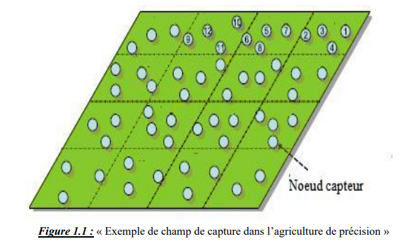

Agriculture de précision:
L'agriculture de précision est un principe de gestion des parcelles agricoles qui vise l'optimisation des rendements et des investissements, en cherchant à mieux tenir compte des variabilités des milieux et des conditions entre parcelles différentes ainsi qu'à des échelles intra-parcellaires .Elle s'intéresse à l'intégration et l'utilisation des technologies de l’information et de divers éléments tels que capteurs, systèmes de contrôle, robots et véhicules autonomes pour faciliter la gestion de l’élevage et de la croissance des cultures. L'agriculture de précision est l'une des applications Internet les plus populaires dans le secteur agricole. De nombreuses organisations bénéficient de cette technologie dans le monde entier.
Elle peut impliquer l'utilisation de divers types de capteurs qui remontent des informations riches de
manière régulière, notamment des :
- capteurs de sol qui recueillent des données sur la teneur des sols en azote
- capteurs d’irrigation mesurent le niveau d’eau
- capteurs d’inondation surveillent également les niveaux d’eau
- capteurs de gel Les informations fournies par ces capteurs permettront de contrôler
automatiquement le système d’irrigation et d’arrosage et d’alerter automatiquement les utilisateurs
lorsque les conditions météorologiques ou autres événements susceptible d’endommager les plants
sensibles se produisent.
L’agriculture dans les champs :
L’agriculture de précision a commencé avec la technologie de localisation, les véhicules agricoles sont de plus en plus sophistiquées, équipées de GPS, de capteurs, de système de visualisation et la possibilité de transmission les données. Les capteurs sont aussi installés dans la terre pour surveiller l’environnement et le sol afin d’informer les agriculteurs de tout ce qui se passe dans le champ (voir Figure 1.4).
Elle peut bénéficier des véhicules connectées et aussi elle a besoin des activités de capture sophistiquées pour fournir des informations sur l’humidité, les couches du sol, la quantité de substances nutritives dans le sol, température, la direction du vent et un autre paramètre important nommé l’Évapotranspiration qui est la perte d’eau sous forme de vapeur.
L’agriculture de précision est une sorte de cyber-agriculture que les experts considèrent comme une véritable révolution. Bien qu’à ses débuts, cette approche high-tech permet de regrouper, collecter, analyser et présenter les données en une façon d’initier une réponse appropriée par l'utilisateur final aux informations reçues. Pour les agriculteurs et les éleveurs, des capteurs spéciaux collectent et analysent les données concernant le sol et la récolte, le comportement des animaux, l’état des machines, etc. Ces données sont stockées et utilisées pour prendre des futures décisions et actions.
L’agriculture de précision est la capacité de gérer les variations dans la production dans les champs et maximiser le rendement financier, réduire la perte et minimiser l’impact de l’environnement utilisant la collecte automatisée des données, documentation et l’utilisation de certaines informations pour les décisions stratégiques de gestion des fermes par la technologie de capture et de communication. L’étape importante de l’agriculture de précision c’est la génération des cartes de sol avec ses caractéristiques en couplant la capture à distance avec le GPS. La collection et la sauvegarde des données électroniques dans les bases de données ont données la naissance du GIS qui permet l’analyse statistique de ces données.
L'agriculture de précision est un principe de gestion des parcelles agricoles qui vise l'optimisation des rendements et des investissements, en cherchant à mieux tenir compte des variabilités des milieux et des conditions entre parcelles différentes ainsi qu'à des échelles intraparcellaires .
Ce concept est apparu à la fin du siècle, dans le contexte de course au progrès des rendements agricoles. Il a notamment influencé le travail du sol, les semis, la fertilisation, l'irrigation, la pulvérisation de pesticides, etc.
Il requiert l’utilisation de nouvelles technologies, telles que l’imagerie satellitaire et l'informatique. Il s'appuie sur des moyens de localisation dans la parcelle dont le système de positionnement par satellites de type GPS.
L'espoir des promoteurs de ces technologies est d'aboutir à un système d'aide à la décision efficace à grande échelle comme aux échelles locales, qui permettrait d'optimiser les rendements des investissements tout en préservant les ressources naturelles, financières et énergétiques. À ce jour, certains progrès ont été faits, pour la gestion des besoins en eau notamment, mais des concepts apparemment simples comme la définition de zones de gestion différenciée vraiment adaptées aux besoins de la plante sont encore hors d'atteinte même pour un seul type de culture sur un seul champ qui évolue dans le temps (voir, par exemple, McBratney et al. (2005), et Whelan et al. (2003). Whelan et McBratney (2003) décrivent les approches actuellement retenues pour définir ces zones de gestion sur des bases agroscientifiques, notamment basées sur les cartes de rendement, les procédures de classification supervisée et non supervisée, sur les imageurs satellites ou vues aériennes, via l'identification des données traduisant des tendances ou des phénomènes stables au fil des saisons ou des années, etc. Parmi ces approches l'approche phytogéomorphologique qui lie la stabilité pluriannuelle et certaines caractéristiques de croissance des cultures à des attributs topologiques des parcelles connait un certain succès. Son intérêt vient du fait que la géomorphologie dicte en grande partie l'hydrologie du champ. De nombreuses données pluriannuelles désormais disponibles montrent qu'une certaine stabilité de ces effets existe (Kaspar et al., (2003)), cependant, le passage à une aide à la décision pouvant universellement aider les agriculteurs, voire permettre une robotisation de tout ou partie des tâches de gestion est encore du domaine de la prospective voire de la sciencefiction.